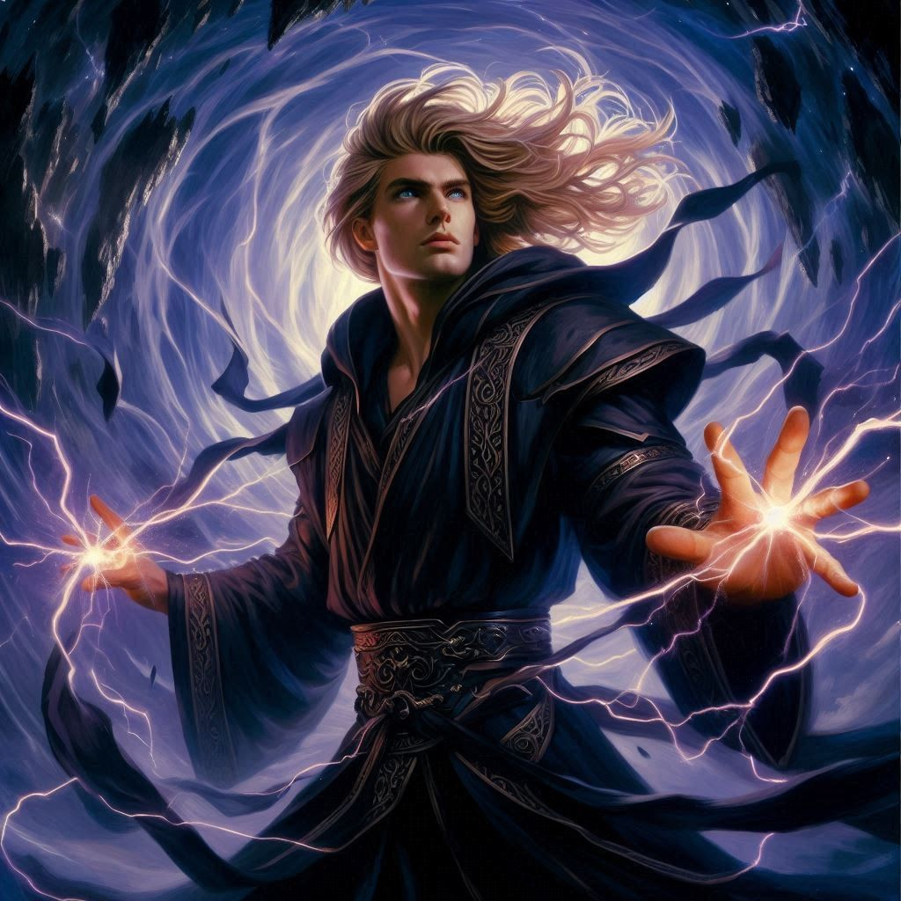
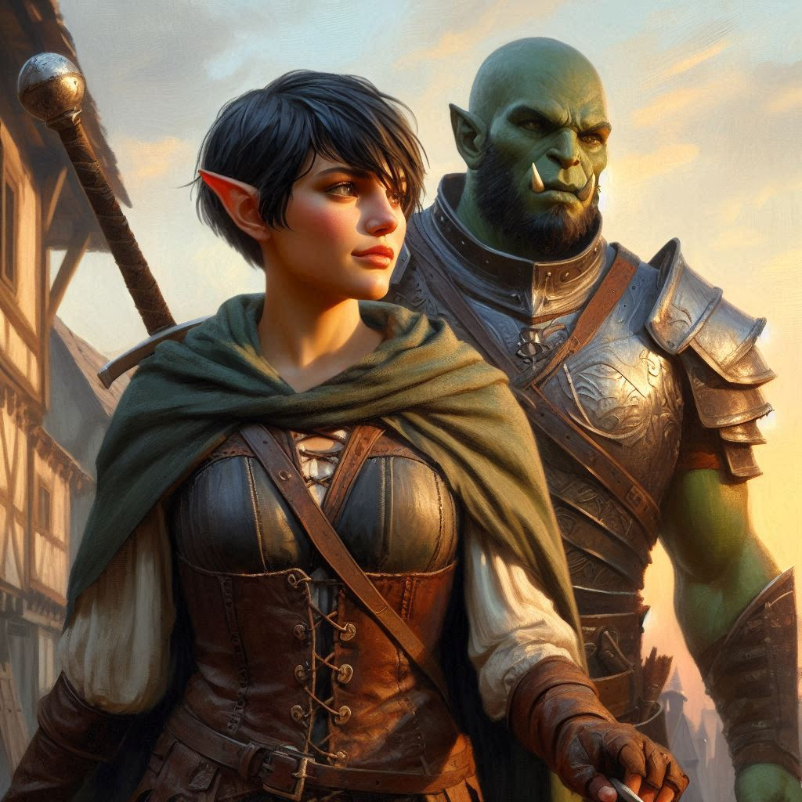

The Sacrifice
The cavern hums with dark energy, the air thick with the remnants of battle. You rush toward Baider, your heart pounding as you hear the sizzle of the Minister of Trade’s magic gathering behind him. He’s about to strike. Time slows, and you see it all: Baider struggling, the dark elf army readying their final assault, the Minister's hand raised, glowing with dark power.
Kira! Jorsh’s voice snaps you out of your daze. You turn to see him, his face etched with agony. His magic is faltering, his once mighty strength flickering as the dark elves rally again. But even as he stands on the brink of collapse, there’s a fierce determination in his eyes.
Go! he commands, his voice raw and desperate. Save Baider! I’ll hold them off.
You hesitate. Every fiber of your being pulls toward him, wanting to stay by his side, to finish this fight together. But Jorsh sees the conflict in your eyes, and he shakes his head, the weight of his sacrifice already set in his resolve. There’s no time, Kira! You have to save him.
Your heart twists painfully as you realize what he’s asking of you. You give Jorsh one last look, a silent plea caught in your throat. But his eyes soften, filled with a bittersweet acceptance. He knows this is the only way. You have to let him go.
Without another word, you turn away, charging toward Baider. The Minister’s magic crackles as it prepares to strike, but you are faster. In a fluid motion, your sword arcs through the air, slicing cleanly through the Minister’s arm just as he releases the spell. He stumbles back, howling in pain, the dark magic dissipating into the air.
Baider slumps to the ground, exhausted but alive. You pull him to his feet, your breath coming in ragged gasps as you glance back at Jorsh.
The dark elf army surges toward him, their twisted forms ready to tear him apart. You feel your stomach clench in terror. Jorsh stands alone, his magic barely keeping the hordes at bay. His body trembles with exhaustion, the strain of holding the portal closed slowly draining him. Yet, he stands tall, his eyes burning with one final purpose.
With the last of his strength, Jorsh raises his hands, calling forth the magic that remains within him. The cavern walls quake as his power roars to life, engulfing the dark elves. One by one, they are dragged toward the abyss, their twisted forms dissolving into the darkness. But the strain is too much for him. Jorsh stumbles, his magic faltering for a brief moment before he summons his final, desperate burst of power.
Kira... His voice is a whisper, a faint echo in the din of battle. And then, with a blinding flash, Jorsh channels everything he has left into the portal.
The ground cracks open beneath the dark elves, a swirling vortex of shadow pulling them down into the abyss. They scream and claw, but there is no escape. One by one, they fall, until the last of their kind is swallowed by the void.
But Jorsh is caught too.
He stands at the edge, teetering on the brink. His magic is gone. His body, broken. And you know there is nothing you can do to save him.
Jorsh! You scream his name, running toward him. But it’s too late.
He meets your gaze one last time, a sad smile on his lips. It had to be this way, Kira, he says softly, his voice almost lost in the roar of the collapsing portal. I’m sorry.
And then, with a final wave of his hand, he sends the remaining dark elves into the abyss—and steps into the void himself.
The portal closes with a deafening silence, leaving the cavern eerily still. You stand there, breathless, staring at the spot where Jorsh once stood. The weight of his sacrifice crashes down on you, a mix of sorrow and bittersweet closure flooding your heart.
Baider rests a hand on your shoulder, his face somber. “He made his choice,” he says quietly. “There was no saving him.”
You nod, unable to speak. The truth of it settles deep within you. Jorsh’s path had always been one of inevitable destruction, and in the end, he chose to save you—to save the world.
The cavern seems to exhale, as though relieved of the darkness that once threatened to consume it. You and Baider stand in the stillness, the weight of everything that has happened pressing down on your shoulders.
It’s over.
But the victory is not without its cost. Jorsh is gone, and with him, the dream of what might have been. You feel the loss keenly, but there’s also a strange sense of peace. His sacrifice wasn’t in vain. You, Baider, Belladonna—all have been saved. And now, the world is safe from the dark power that had nearly consumed it.
But you are forever changed.
As you and Baider make your way out of the caverns, the weight of Jorsh’s death still hangs heavy in the air. The choices you’ve made, the sacrifices that have been endured—they will stay with you, shaping who you are.
You are not the same person who entered these caverns. You are stronger, but with that strength comes responsibility. The world you return to will never be the same, and neither will you.
You’ll carry Jorsh’s memory with you, a reminder of the thin line between power and corruption, love and duty. And though your heart aches with the loss of him, you know that the path forward is clear.
You are a leader now. A protector.
And the world will look to you to guide it into a brighter future.